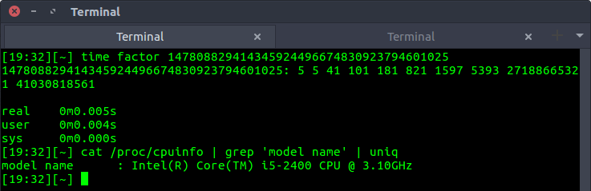
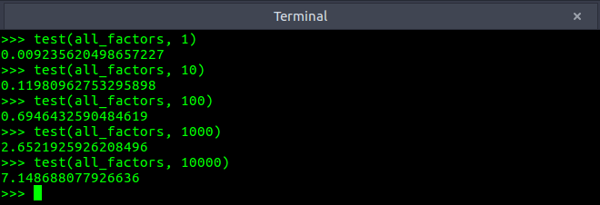
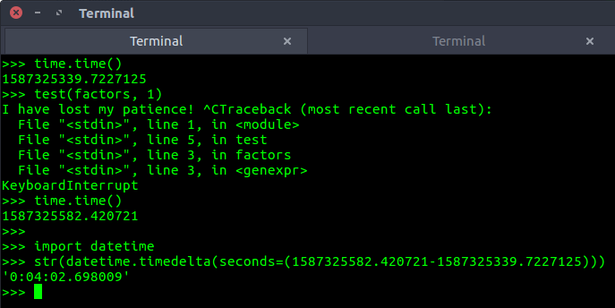

An interesting question was posted on Stack Overflow dated July 23, 2011. The question was - what is the most efficient way of finding all the factors of a number in Python?
Do note that the author was seeking all possible factors and not just the prime factors. This is a fun problem to solve and reminds me of a time when I used to goof around all day with Project Euler problems.
The topmost answer from @agf is how most of us would try and approach this problem -
from functools import reduce
def factors(n):
return set(reduce(list.__add__,
([i, n//i] for i in range(1, int(n**0.5) + 1) if n % i == 0)))The above code is simple, elegant, and suprisingly fast for numbers below 1016. As concisely described by @agf - the code tries all the numbers between 1 and sqrt(n)+1. If a number is found to divisible by n, the number (i) along with n/i are added to the list.
Question is can we do better with minimal effort?
GNU coreutils has a utility called factor. As mentioned on Wikipedia -
In some variants of Unix, it is classified as a "game" more than a serious utility, and therefore documented in section 6.Can we use this game to our advantage? Yes, we can! Although this utility finds prime factors instead of all factors, we can try and find all possible combinations of prime factors and get the list of factors. The utility is blazingly fast as seen in the below example - 
We can integrate the results into Python using the standard library subprocess -
import subprocess
def find_prime_factors(n):
process = subprocess.Popen("factor {}".format(n).split(), stdout=subprocess.PIPE)
output, error = process.communicate()
return [int(num) for num in output.decode().split()[1:]]With this, we are very close to the actual solution, all we need to do is find all the numbers which can be generated by multiplying the prime factors. This will provide us all the factors of that number. For example:
num = 18
prime_factors = [2, 3, 3]
Multiplying all possible combinations of the above prime_factors list gives:
(2) = 2, (3) = 3, (2,3) = 6, (3,3) = 9, (2,3,3) = 18
Adding 1 at the beginning, we get all factors of 18: [1, 2, 3, 6, 9, 18]
The above logic can be implemented in Python as:
import itertools
from functools import reduce
def all_factors(n):
prime_factors = find_prime_factors(n)
factors = set({1})
# using powerset()
# as described in https://docs.python.org/2/library/itertools.html#recipes
combinations = itertools.chain.from_iterable(
itertools.combinations(prime_factors, r)
for r in range(1, len(prime_factors) + 1)
)
for subset in combinations:
factors.add(reduce(lambda x, y: x*y, subset))
return factorsWon't this method be inefficient if the number of prime factors is large?
Yes, as the number of prime factors increases, this method becomes less efficient. As taught in a probability class, the number of combinations of length R for a List of length N is NCR = N!/(R!*(N-R)!). A good way to imagine this is by plotting 10X for a range X. For 1013, we get prime factors as 213513. Finding all the combinations for N=26 is not a trivial task for the above code. However, it is a breeze for the Stack Overflow code. The below chart will help visualize this -
Based on my observation, the method all_factors(n) can easily fetch factors when no. of prime factors (N) is less than 20. To prove this, we can find factors of randomly selected numbers between the range 1-1030. Here is a simple test case:
import random
import time
def test(fact, no_test_to_perform):
max_time = 0
for i in range(no_test_to_perform):
begin = time.time()
factors = fact(random.randint(1, 10**30))
end = time.time() - begin
max_time = max(max_time, end)
return max_timeThe results for the method all_factors were:
As we can see even for 10000 randomly chosen integers (range 1-1030), the maximum time all_factors took was around 7.14 seconds. This is impressive! By comparison, here is how disastrous the Stack Overflow code was on the above test:
While this was just one test, I could have easily wasted hours without observing any improvement in its test performance.
How does the command-line utility - factor work? From its source code:
Algorithm:
(1) Perform trial division using a small primes table, but without hardware division since the primes table store inverses modulo the word base. (The GMP variant of this code doesn't make use of the precomputed inverses, but instead relies on GMP for fast divisibility testing.)
(2) Check the nature of any non-factored part using Miller-Rabin for detecting composites, and Lucas for detecting primes.
(3) Factor any remaining composite part using the Pollard-Brent rho algorithm or if USE_SQUFOF is defined to 1, try that first. Status of found factors are checked again using Miller-Rabin and Lucas.
We prefer using Hensel norm in the divisions, not the more familiar Euclidian norm, since the former leads to much faster code. In the Pollard-Brent rho code and the prime testing code, we use Montgomery's trick of multiplying all n-residues by the word base, allowing cheap Hensel reductions mod n.
I will try and discuss factor's implementation in a future blog post. The bottom line is, for large ranges and no. of prime factors < 20, the all_factors method gives a great performance. A curious reader can try and implement a hybrid model to get the best of both worlds.
Also, I tried using Sympy's factorint (as mentioned by few in the Stack Overflow thread) and found it to be noticeably slower than my all_factors implementation.
Lastly, is it considered a good practice to call a command-line utility in Python?
For production, probably not. But for small projects and solving Project Euler like problems, hell ye!